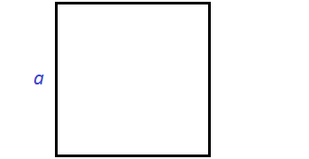
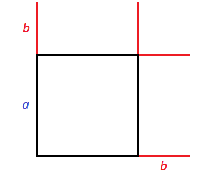
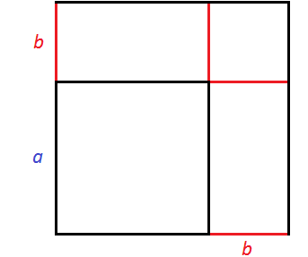
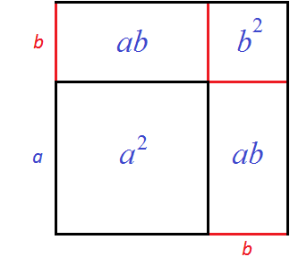
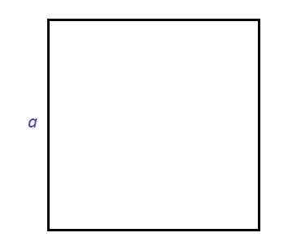
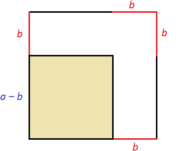
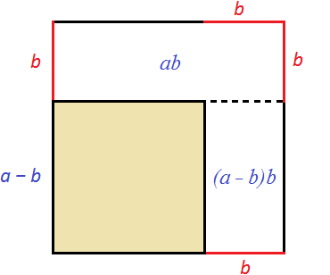

Продолжаем изучать многочлены. В данном уроке мы научимся перемножать многочлены с помощью формул сокращённого умножения.
Квадрат суммы двух выражений
Существует ряд случаев, когда умножение многочлена на многочлен можно значительно упростить. Таковым к примеру является случай (2x + 3y)2.
Выражение (2x + 3y)2 это перемножение двух многочленов, каждый из которых равен (2x + 3y)
(2x + 3y)2 = (2x + 3y)(2x + 3y)
Получили умножение многочлена на многочлен. Выполним его:
(2x + 3y)2 = (2x + 3y)(2x + 3y) = 4x2 + 6xy + 6xy + 9y2 = 4x2 + 12xy + 9y2
То есть выражение (2x + 3y)2 равно 4x2 + 12xy + 9y2
(2x + 3y)2 = 4x2 + 12xy + 9y2
Решим аналогичный пример, который попроще:
(a + b)2
Выражение (a + b)2 это перемножение двух многочленов, каждый из которых равен (a + b)
(a + b)2 = (a + b)(a + b)
Выполним это умножение:
(a + b)2 = (a + b)(a + b) = a2 + ab + ab + b2 = a2 + 2ab + b2
То есть выражение (a + b)2 равно a2 + 2ab + b2
(a + b)2 = a2 + 2ab + b2
Оказывается, что случай (a + b)2 можно распространить для любых a и b. Первый пример, который мы решили, а именно (2x + 3y)2 можно решить с помощью тождества (a + b)2 = a2 + 2ab + b2. Для этого нужно подставить вместо переменных a и b соответствующие члены из выражение (2x + 3y)2. В данном случае переменной a соответствует член 2x, а переменной b соответствует член 3y
a = 2x
b = 3y
И далее можно воспользоваться тождеством (a + b)2 = a2 + 2ab + b2, но вместо переменных a и b нужно подставлять выражения 2x и 3y соответственно:
(2x + 3y)2 = (2x)2 + 2 × 2x × 3y + (3y)2 = 4x2 + 12xy + 9y2
Как и в прошлый раз получили многочлен 4x2 + 12xy + 9y2. Решение обычно записывают покороче, выполняя в уме все элементарные преобразования:
(2x + 3y)2 = 4x2 + 12xy + 9y2
Тождество (a + b)2 = a2 + 2ab + b2 называют формулой квадрата суммы двух выражений. Эту формулу можно прочитать так:
Квадрат суммы двух выражений равен квадрату первого выражения плюс удвоенное произведение первого выражения на второе плюс квадрат второго выражения.
Рассмотрим выражение (2 + 3)2. Его можно вычислить двумя способами: выполнить сложение в скобках и возвести полученный результат в квадрат, либо воспользоваться формулой квадрата суммы двух выражений.
Первый способ:
(2 + 3)2 = 52 = 25
Второй способ:
(2 + 3)2 = 22 + 2 × 2 × 3 + 32 = 4 + 12 + 9 = 25
Пример 2. Преобразовать выражение (5a + 3)2 в многочлен.
Воспользуемся формулой квадрата суммы двух выражений:
(a + b)2 = a2 + 2ab + b2
(5a + 3)2 = (5a)2 + 2 × 5a × 3 + 32 = 25a2 + 30a + 9
Значит, (5a + 3)2 = 25a2 + 30a + 9.
Попробуем решить данный пример, не пользуясь формулой квадрата суммы. У нас должен получиться тот же результат:
(5a + 3)2 = (5a + 3)(5a + 3) = 25a2 + 15a + 15a + 9 = 25a2 + 30a + 9
Формула квадрата суммы двух выражений имеет геометрический смысл. Мы помним, что для вычисления площади квадрата нужно возвести во вторую степень его сторону.
Например, площадь квадрата со стороной a будет равна a2. Если увеличить сторону квадрата на b, то площадь будет равна (a + b)2
Рассмотрим следующий рисунок:

Представим, что сторону квадрата, изображённого на данном рисунке увеличили на b. У квадрата все стороны равны. Если его сторону увеличить на b, то остальные стороны тоже увеличатся на b

Получился новый квадрат, который больше предыдущего. Чтобы хорошо увидеть его, достроим отсутствующие стороны:

Чтобы вычислить площадь этого квадрата, можно по отдельности вычислить квадраты и прямоугольники, входящие в него, затем сложить полученные результаты.
Сначала можно вычислить квадрат со стороной a — его площадь будет равна a2. Затем можно вычислить прямоугольники со сторонами a и b — они будут равны ab. Затем можно вычислить квадрат со стороной b

В результате получается следующая сумма площадей:
a2 + ab + ab + b2
Сумму площадей одинаковых прямоугольников можно заменить на умножение 2ab, которое буквально будет означать «повторить два раза площадь прямоугольника ab». Алгебраически это получается путём приведения подобных слагаемых ab и ab. В результате получается выражение a2 + 2ab + b2, которое является правой частью формулы квадрата суммы двух выражений:
(a + b)2 = a2 + 2ab + b2
Квадрат разности двух выражений
Формула квадрата разности двух выражений выглядит следующим образом:
(a − b)2 = a2 − 2ab + b2
Эту формулу можно прочитать так:
Квадрат разности двух выражений равен квадрату первого выражения минус удвоенное произведение первого выражения на второе плюс квадрат второго выражения.
Формула квадрата разности двух выражений выводится таким же образом, как и формула квадрата суммы двух выражений. Выражение (a − b)2 представляет собой произведение двух многочленов, каждый из которых равен (a − b)
(a − b)2 = (a − b)(a − b)
Если выполнить это умножение, то получится многочлен a2 − 2ab + b2
(a − b)2 = (a − b)(a − b) = a2 − ab − ab + b2 = a2 − 2ab + b2
Пример 1. Преобразовать выражение (7x − 5)2 в многочлен.
Воспользуемся формулой квадрата разности двух выражений:
(a − b)2 = a2 − 2ab + b2
(7x − 5)2 = (7x)2 − 2 × 7x × 5 + 52 = 49x2 − 70x + 25
Значит, (7x − 5)2 = 49x2 − 70x + 25.
Попробуем решить данный пример, не пользуясь формулой квадрата разности. У нас должен получиться тот же результат:
(7x − 5)2 = (7x − 5)(7x − 5) = 49x2 − 35x − 35x + 25 = 49x2 − 70x + 25.
Формула квадрата разности двух выражений тоже имеет геометрический смысл. Если площадь квадрата со стороной a равна a2, то площадь квадрата, сторона которого уменьшена на b, будет равна (a − b)2
Рассмотрим следующий рисунок:

Представим, что сторону квадрата, изображённого на данном рисунке уменьшили на b. У квадрата все стороны равны. Если одну сторону уменьшить на b, то остальные стороны тоже уменьшатся на b

Получился новый квадрат, который меньше предыдущего. На рисунке он выделен жёлтым. Сторона его равна a − b, поскольку старая сторона a уменьшилась на b. Чтобы вычислить площадь этого квадрата, можно из первоначальной площади квадрата a2 вычесть площади прямоугольников, которые получились в процессе уменьшения сторон старого квадрата. Покажем эти прямоугольники:

Тогда можно написать следующее выражение: старая площадь a2 минус площадь ab минус площадь (a − b)b
a2 − ab − (a − b)b
Раскроем скобки в выражении (a − b)b
a2 − ab − ab + b2
Приведем подобные слагаемые:
a2 − 2ab + b2
В результате получается выражение a2 − 2ab + b2, которое является правой частью формулы квадрата разности двух выражений:
(a − b)2 = a2 − 2ab + b2
Формулы квадрата суммы и квадрата разности в общем называют формулами сокращённого умножения. Эти формулы позволяют значительно упростить и ускорить процесс перемножения многочленов.
Ранее мы говорили, что рассматривая член многочлена по отдельности, его нужно рассматривать вместе со знаком, который перед ним располагается.
Но применяя формулы сокращённого умножения, знак исходного многочлена не следует рассматривать в качестве знака самого этого члена.
Например, если дано выражение (5x − 2y)2, и мы хотим воспользоваться формулой (a − b)2 = a2 − 2ab + b2, то вместо b нужно подставлять 2y, а не −2y. Это особенность работы с формулами, которую не следует забывать.
(5x − 2y)2
a = 5x
b = 2y
(5x − 2y)2 = (5x)2 − 2 × 5x × 2y + (2y)2 = 25x2 − 20xy + 4y2
Если подставлять −2y, то это будет означать, что разность в скобках исходного выражения была заменена на сумму:
(5x − 2y)2 = (5x + (−2y))2
и в таком случае нужно применять не формулу квадрата разности, а формулу квадрата суммы:
(5x + (−2y)2
a = 5x
b = −2y
(5x + (−2y))2 = (5x)2 + 2 × 5x × (−2y) + (−2y)2 = 25x2 − 20xy + 4y2
Исключением могут быть выражения вида (x − (−y))2. В данном случае, применяя формулу (a − b)2 = a2 − 2ab + b2 вместо b следует подставить (−y)
(x − (−y))2 = x2 − 2 × x × (−y) + (−y)2 = x2 + 2xy + y2
Но возводя в квадрат выражения вида x − (−y), удобнее будет заменять вычитание на сложение x + y. Тогда первоначальное выражение примет вид (x + y)2 и можно будет воспользоваться формулой квадрата суммы, а не разности:
(x + y)2 = x2 + 2xy + y2
Куб суммы и куб разности
Формулы куба суммы двух выражений и куба разности двух выражений выглядят следующим образом:
(a + b)3 = a3 + 3a2b + 3ab2 + b3
(a − b)3 = a3 − 3a2b + 3ab2 − b3
Формулу куба суммы двух выражений можно прочитать так:
Куб суммы двух выражений равен кубу первого выражения плюс утроенное произведение квадрата первого выражения на второе плюс утроенное произведение первого выражения на квадрат второго плюс куб второго выражения.
А формулу куба разности двух выражений можно прочитать так:
Куб разности двух выражений равен кубу первого выражения минус утроенное произведение квадрата первого выражения на второе плюс утроенное произведение первого выражения на квадрат второго минус куб второго выражения.
При решении задач желательно знать эти формулы наизусть. Если не запомнили — не беда! Их можно выводить самостоятельно. Мы это уже умеем.
Выведем формулу куба суммы самостоятельно:
(a + b)3
Выражение (a + b)3 представляет собой произведение из трёх многочленов, каждый из которых равен (a + b)
(a + b)3 = (a + b)(a + b)(a + b)
Но выражение (a + b)3 также может быть записано как (a + b)(a + b)2
(a + b)3 = (a + b)(a + b)2
При этом сомножитель (a + b)2 является квадратом суммы двух выражений. Этот квадрат суммы равен выражению a2 + 2ab + b2.
Тогда (a + b)3 можно записать как (a + b)(a2 + 2ab + b2).
(a + b)3 = (a + b)(a2 + 2ab + b2)
А это есть умножение многочлена на многочлен. Выполним его:
(a + b)3 = (a + b)(a2 + 2ab + b2) = a3 + 2a2b + ab2 + a2b + 2ab2 + b3 = a3 + 3a2b + 3ab2 + b3
Аналогично можно вывести формулу куба разности двух выражений:
(a − b)3 = (a − b)(a2 − 2ab + b2) = a3 − 2a2b + ab2 − a2b + 2ab2 − b3 = a3 − 3a2b + 3ab2 − b3
Пример 1. Преобразуйте выражение (x + 1)3 в многочлен.
Воспользуемся формулой куба суммы двух выражений:
(a + b)3 = a3 + 3a2b + 3ab2 + b3
(x + 1)3 = x3 + 3 × x2 × 1 + 3 × x × 12 + 13 = x3 + 3x2 + 3x + 1
Попробуем решить данный пример, не используя формулу куба суммы двух выражений. У нас получится тот же результат, но решение станет длиннее:
(x + 1)3 = (x + 1)(x + 1)(x + 1) = (x + 1)(x2 + 2x + 1) = x3 + 2x2 + x + x2 + 2x + 1 = x3 + 3x2 + 3x + 1
Пример 2. Преобразовать выражение (6a2 + 3b3)3 в многочлен.
Воспользуемся формулой куба суммы двух выражений:
(a + b)3 = a3 + 3a2b + 3ab2 + b3
(6a2 + 3b3)3 = (6a2)3 + 3 × (6a2)2 × 3b3 + 3 × 6a2 × (3b3)2 + (3b3)3 = 216a6 + 3 × 36a4 × 3b3 + 3 × 6a2 × 9b6 + 27b9
Пример 3. Преобразовать выражение (n2 − 3)3 в многочлен.
Воспользуемся формулой куба разности двух выражений:
(a − b) = a3 − 3a2b + 3ab2 − b3
(n2 − 3)3 = (n2)3 − 3 × (n2)2 × 3 + 3 × n2 × 32 − 33 = n6 − 9n4 + 27n2 − 27
Пример 4. Преобразовать выражение (2x2 − x3)3 в многочлен.
Воспользуемся формулой куба разности двух выражений:
(a − b) = a3 − 3a2b + 3ab2 − b3
(2x2 − x3)3 = (2x2)3 − 3 × (2x2)2 × x3 + 3 × 2x2 × (x3)2 − (x3)3 =
8x6 − 3 × 4x4 × x3 + 3 × 2x2 × x6 − x9 =
8x6 − 12x7 + 6x8 − x9
Умножение разности двух выражений на их сумму
Встречаются задачи, в которых требуется умножить разность двух выражений на их сумму. Например:
(a − b)(a + b)
В этом выражении разность двух выражений a и b умножена на сумму этих же двух выражений. Выполним данное умножение:
(a − b)(a + b) = a2 + ab − ab − b2 = a2 − b2
То есть выражение (a − b)(a + b) равно a2 − b2
(a − b)(a + b) = a2 − b2
Видим, что при умножении разности двух выражений на их сумму, получается разность квадратов этих выражений.
Произведение разности двух выражений и их суммы равно разности квадратов этих выражений.
Случай (a − b)(a + b) можно распространить для любых a и b. Проще говоря, если при решении задачи потребуется умножить разность двух выражений на их сумму, то это умножение можно заменить на разность квадратов этих выражений.
Пример 1. Выполнить умножение (2x − 5)(2x + 5)
В этом примере разность выражений 2x и 5 умножена на сумму этих же выражений. Тогда согласно формуле (a − b)(a + b) = a2 − b2 имеем:
(2x − 5)(2x + 5) = (2x)2 − 52
Вычислим правую часть, получим 4x2 − 25
(2x − 5)(2x + 5) = (2x)2 − 52 = 4x2 − 25
Попробуем решить данный пример, не пользуясь формулой (a − b)(a + b) = a2 − b2. У нас получится тот же результат 4x2 − 25
(2x − 5)(2x + 5) = 4x2 − 10x + 10x − 25 = 4x2 − 25
Пример 2. Выполнить умножение (4x − 5y)(4x + 5y)
Воспользуемся формулой умножения разности двух выражений на их сумму:
(a − b)(a + b) = a2 − b2
(4x − 5y)(4x + 5y) = (4x)2 − (5y)2 = 16x2 − 25y2
Пример 3. Выполнить умножение (2a + 3b)(2a − 3b)
Воспользуемся формулой умножения разности двух выражений на их сумму:
(a − b)(a + b) = a2 − b2
(2a + 3b)(2a − 3b) = (2a)2 − (3b)2 = 4a2 − 9b2
В данном примере сумма членов 2a и 3b располагалась раньше, чем разность этих членов. А в формуле (a − b)(a + b) = a2 − b2 разность располагается раньше.
Нет никакой разницы как располагаются сомножители (a − b) в (a + b) в формуле. Они могут быть быть записаны как (a − b)(a + b), так и (a + b)(a − b). Результат по прежнему будет равен a2 − b2, поскольку от перестановки сомножителей произведение не меняется.
Так и в данном примере сомножители (2a + 3b) и (2a − 3b) можно записать как (2a + 3b)(2a − 3b), так и (2a − 3b)(2a + 3b). Результат всё так же будет равен 4a2 − 9b2.
Пример 3. Выполнить умножение (7 + 3x)(3x − 7)
Воспользуемся формулой умножения разности двух выражений на их сумму:
(a − b)(a + b) = a2 − b2
(7 + 3x)(3x − 7) = (3x)2 − 72 = 9x2 − 49
Пример 4. Выполнить умножение (x2 − y3)(x2 + y3)
(a − b)(a + b) = a2 − b2
(x2 − y3)(x2 + y3) = (x2)2 − (y3)2 = x4 − y6
Пример 5. Выполнить умножение (−5x − 3y)(5x − 3y)
В выражении (−5x − 3y) вынесем за скобки −1, тогда исходное выражение примет следующий вид:
(−5x − 3y)(5x − 3y) = −1(5x + 3y)(5x − 3y)
Произведение (5x + 3y)(5x − 3y) заменим на разность квадратов:
(−5x − 3y)(5x − 3y) = −1(5x + 3y)(5x − 3y) = −1((5x)2 − (3y)2)
Разность квадратов была заключена в скобки. Если этого не сделать, то получится, что −1 умножается только на (5x)2. А это приведет к ошибке и изменению значения исходного выражения.
Далее вычисляем выражение в скобках:
(−5x − 3y)(5x − 3y) = −1(5x + 3y)(5x − 3y) = −1((5x)2 − (3y)2) = −1(25x2 − 9y2)
Теперь умножим −1 на выражение в скобках и получим окончательный результат:
(−5x − 3y)(5x − 3y) = −1(5x + 3y)(5x − 3y) = −1((5x)2 − (3y)2) =
−1(25x2 − 9y2) = −25x2 + 9y2
Умножение разности двух выражений на неполный квадрат их суммы
Встречаются задачи, в которых требуется умножить разность двух выражений на неполный квадрат их суммы. Выглядит это произведение следующим образом:
(a − b)(a2 + ab + b2)
Первый многочлен (a − b) является разностью двух выражений, а второй многочлен (a2 + ab + b2) является неполным квадратом суммы этих двух выражений.
Неполный квадрат суммы это многочлен вида a2 + ab + b2. Он похож на обычный квадрат суммы a2 + 2ab + b2 за исключением того, что в нём произведение первого и второго выражений не удваивается.
Например, выражение 4x2 + 6xy + 9y2 является неполным квадратом суммы выражений 2x и 3y.
Действительно, первый член выражения 4x2 + 6xy + 9y2, а именно 4x2 является квадратом выражения 2x, поскольку (2x)2 = 4x2. Третий член выражения 4x2 + 6xy + 9y2, а именно 9y2 является квадратом выражения 3y, поскольку (3y)2 = 9y2. Член находящийся в середине 6xy, является произведением выражений 2x и 3y.
Итак, умножим разность (a − b) на неполный квадрат суммы a2 + ab + b2
(a − b)(a2 + ab + b2) = a(a2 + ab + b2) − b(a2 + ab + b2) =
a3 + a2b + ab2 − a2b − ab2 − b3 = a3 − b3
То есть выражение (a − b)(a2 + ab + b2) равно a3 − b3
(a − b)(a2 + ab + b2) = a3 − b3
Это тождество называют формулой умножения разности двух выражений на неполный квадрат их суммы. Эту формулу можно прочитать так:
Произведение разности двух выражений и неполного квадрата их суммы равно разности кубов этих выражений.
Пример 1. Выполнить умножение (2x − 3y)(4x2 + 6xy + 9y2)
Первый многочлен (2x − 3y) это разность двух выражений 2x и 3y. Второй многочлен 4x2 + 6xy + 9y2 это неполный квадрат суммы двух выражений 2x и 3y. Это позволяет не приводя длинных вычислений, воспользоваться формулой (a − b)(a2 + ab + b2) = a3 − b3. В нашем случае умножение (2x − 3y)(4x2 + 6xy + 9y2) можно заменить на разность кубов 2x и 3y
(2x − 3y)(4x2 + 6xy + 9y2) = (2x)3 − (3y)3 = 8x3 − 27y3
Попробуем решить этот же пример, не пользуясь формулой (a − b)(a2 + ab + b2) = a3 − b3. У нас получится тот же результат, но решение станет длиннее:
(2x − 3y)(4x2 + 6xy + 9y2) = 2x(4x2 + 6xy + 9y2) − 3y(4x2 + 6xy + 9y2) =
8x3 + 12x2y + 18xy2 − 12x2y − 18xy2 − 27y3 = 8x3 − 27y3
Пример 2. Выполнить умножение (3 − x)(9 + 3x + x2)
Первый многочлен (3 − x) является разностью двух выражений, а второй многочлен является неполным квадратом суммы этих двух выражений. Это позволяет воспользоваться формулой (a − b)(a2 + ab + b2) = a3 − b3
(3 − x)(9 + 3x + x2) = 33 − x3 = 27 − x3
Умножение суммы двух выражений на неполный квадрат их разности
Встречаются задачи, в которых требуется умножить сумму двух выражений на неполный квадрат их разности. Выглядит это произведение следующим образом:
(a + b)(a2 − ab + b2)
Первый многочлен (a + b) является суммой двух выражений, а второй многочлен (a2 − ab + b2) является неполным квадратом разности этих двух выражений.
Неполный квадрат разности это многочлен вида a2 − ab + b2. Он похож на обычный квадрат разности a2 − 2ab + b2 за исключением того, что в нём произведение первого и второго выражений не удваивается.
Например, выражение 4x2 − 6xy + 9y2 является неполным квадратом разности выражений 2x и 3y.
(2x)2 − 2x × 3y + (3y)2 = 4x2 − 6xy + 9y2
Вернёмся к изначальному примеру. Умножим сумму a + b на неполный квадрат разности a2 − ab + b2
(a + b)(a2 − ab + b2) = a(a2 − ab + b2) + b(a2 − ab + b2) =
a3 − a2b + ab2 + a2b − ab2 + b3 = a3 + b3
То есть выражение (a + b)(a2 − ab + b2) равно a3 + b3
(a + b)(a2 − ab + b2) = a3 + b3
Это тождество называют формулой умножения суммы двух выражений на неполный квадрат их разности. Эту формулу можно прочитать так:
Произведение суммы двух выражений и неполного квадрата их разности равно сумме кубов этих выражений.
Пример 1. Выполнить умножение (2x + 3y)(4x2 − 6xy + 9y2)
Первый многочлен (2x + 3y) это сумма двух выражений 2x и 3y, а второй многочлен 4x2 − 6xy + 9y2 это неполный квадрат разности этих выражений. Это позволяет не приводя длинных вычислений, воспользоваться формулой (a + b)(a2 − ab + b2) = a3 + b3. В нашем случае умножение (2x + 3y)(4x2 − 6xy + 9y2) можно заменить на сумму кубов 2x и 3y
(2x + 3y)(4x2 − 6xy + 9y2) = (2x)3 + (3y)3 = 8x3 + 27y3
Попробуем решить этот же пример, не пользуясь формулой (a + b)(a2 − ab + b2) = a3 + b3. У нас получится тот же результат, но решение станет длиннее:
(2x + 3y)(4x2 − 6xy + 9y2) = 2x(4x2 − 6xy + 9y2) + 3y(4x2 − 6xy + 9y2) =
8x3 − 12x2y + 18xy2 + 12x2y − 18xy2 + 27y3 = 8x3 + 27y3
Пример 2. Выполнить умножение (2x + y)(4x2 − 2xy + y2)
Первый многочлен (2x + y) является суммой двух выражений, а второй многочлен (4x2 − 2xy + y2) является неполным квадратом разности этих выражений. Это позволяет воспользоваться формулой (a + b)(a2 − ab + b2) = a3 + b3
(2x + y)(4x2 − 2xy + y2) = (2x)3 + y3 = 8x3 + y3
Попробуем решить этот же пример, не пользуясь формулой (a + b)(a2 − ab + b2) = a3 + b3. У нас получится тот же результат, но решение станет длиннее:
(2x + y)(4x2 − 2xy + y2) = 2x(4x2 − 2xy + y2) + y(4x2 − 2xy + y2) =
8x3 − 4x2y + 2xy2 + 4x2y − 2xy2 + y3 = 8x3 + y3